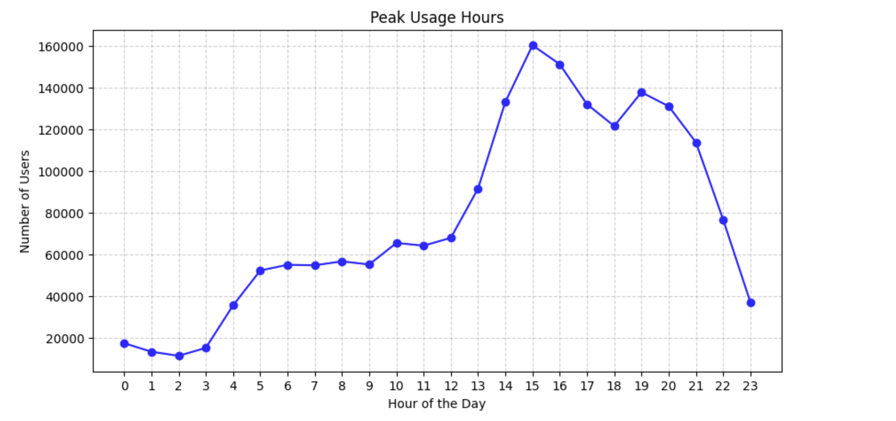
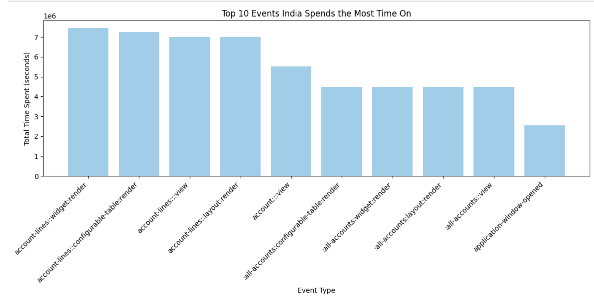
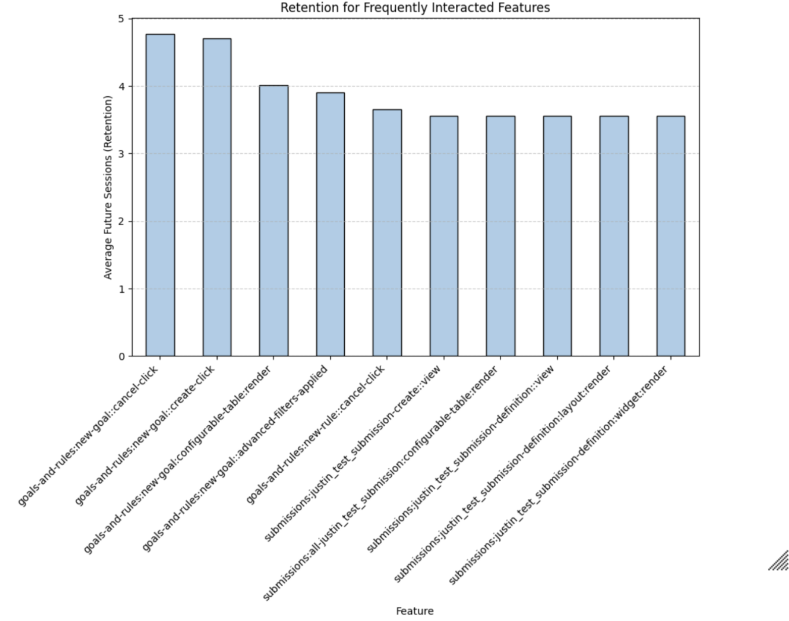

Figure 1: Peak Usage Hours
The peak user activity occurs between 3-7pm, with the highest traffic at 3pm, making it the optimal time to schedule in-app prompts and notifications to engage users and help them discover new features. This time window maximizes user interaction, keeping them hooked on the app.

Figure 3: Top 10 Events India Spends the Most Time On
India is the top country, and the most used feature is account-lines::widget:render. We need to determine if this feature is a bottleneck or a valuable feature where users spend significant time. If it's a bottleneck, we should optimize it; if it's a useful feature, we can push Indian users to it by analyzing their paths with our model. The account-lines::widget:render likely displays key account-related information like transactions or policy details.

Figure 4: Retention for Frequently Interacted Features
The feature goals-and-rles::new-goal::cancel-click is likely related to users interacting with goal creation and then canceling. Since users spend the most time after this, optimizing the process can help increase engagement and retention.